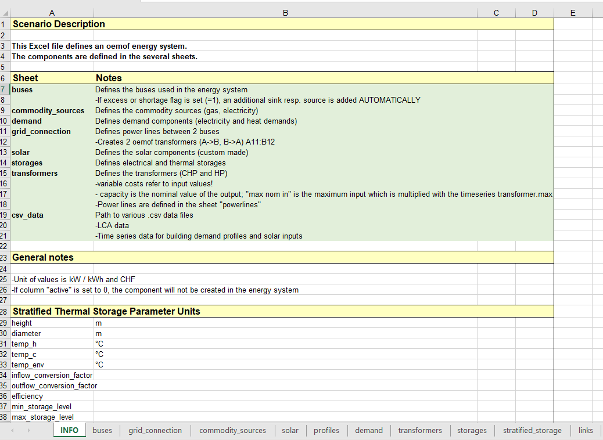
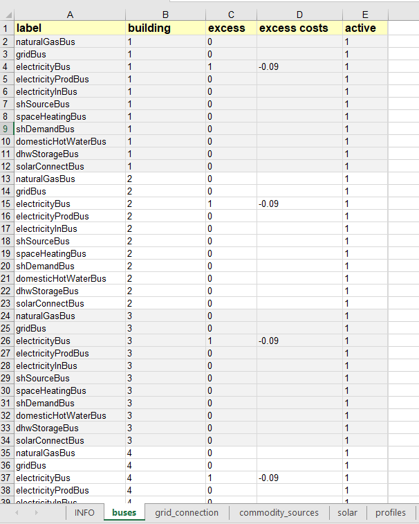

Defining an energy network
An energy network can be defined as an object of the EnergyNetworkIndiv class or the EnergyNetworkGroup class. This object then acts as the primary container for the model. An energy network is grouped into buildings, each building would then contain the definition of components such as sources, sinks, transformers, and buses (the connections between different components). These components, and their respective parameters, are defined in an excel file which is provided as an input. A description on how to prepare the excel file is provided in the next sections.
EnergyNetworkClass
The EnergyNetworkClass is the main parent class, from which two child classes EnergyNetworkIndiv and EnergyNetworkGroup are inherited. Either EnergyNetworkIndiv class or EnergyNetworkGroup class could be used to define an energy network. The choice mainly depends on whether the buildings are linked together (electrically and/or thermally) or not.
If the buildings within an energy network do not share electricity and/or heat, EnergyNetworkIndiv class is used:
import EnergyNetworkIndiv
network = EnergyNetworkIndiv(dateTimeIndex, tSH=35, tDHW=55)
Otherwise, if the buildings are expected to share energy (electrical and/or heat), EnergyNetworkGroup class is used:
import EnergyNetworkGroup
network = EnergyNetworkGroup(dateTimeIndex, tSH=35, tDHW=55)
The first parameter to be passed in both the cases is a Datetime index. This parameter gives the time range for an optimization model. The Datetime index could be defined using date_range() in pandas:
import pandas as pd
dateTimeIndex = pd.date_range('2021-01-01 00:00:00', '2021-12-31 23:00:00', freq="60min")
The second and the third parameters tSH and tDHW define the temperatures for space heating and domestic hot water production, respectively.
Once the network object has been created, the next step then is to build the model from an input excel file which
defines different components which constitute the model, how they are connected and their associated parameters:
network.setFromExcel(inputExcelFilePath, numberOfBuildings, clusterSize, opt)
inputExcelFilePath gives the path of the excel input file. numberofBuildings is an integer parameter specifying the
number of buildings defined in the excel file. The last two parameters clusterSize and opt are optional. The opt
parameter could be either 'costs' (default value) or 'env' depending on which criteria should be optimized. The
clusterSize parameter is used to provide a selected number of days which could be assumed representative of the entire
time range. For example: two typical days could be selected to model the entire year, which could represent two clusters
summer and winter. This would improve the optimization speed. If not given during the function call, the default value
of the clusterSize parameter assumes no day clusters. This parameter is described further in
Advanced under-development features
Input Excel File
The input excel file is used to define an optimization model and set the model parameters. Each sheet of this excel file is structured to defin different components, such as buses, storages and transformers, their respective parameters, connections between these components and the building to which they belong.
{kind=link}
A sample excel file for building the energy network model is given in the excels folder: `scenario.xls <https://github.com/SPF-OST/optihood/blob/main/data/excels/scenario.xls`_. The input excel file typically has 9-10 sheets, each defining a different component type of the model.
buses
This excel sheet defines the buses used in the energy network. Buses define the connections between different components. Each row of this excel sheet represents a bus node in the model.
{kind=link}
label(string)label name of the bus. Should be unique for each building i.e. different buildings could have the same label for two buses but for one building the buses should not have duplicate labels.
active(0 or 1)If set to 1 then the corresponding bus is active, otherwise (if 0) then the bus is inactive in the model. Could be used to optimize different scenarios with different buses without the need to re-construct the base excel file.
excess(0 or 1)If set to 1 then the corresponding bus has the possibility of having an excess flow unbalanced to the demand. An additional sink node is automatically added in this case to accept this excess flow. If set to 0 then the bus cannot have an excess flow.
excess costs(float)The associated cost of excess flow from a bus. Relevant only if
excessis set to 1. Could be negative to denote monetary gains such as in case of PV feed-in.building(integer)Building number to which the bus belongs. Should be unique for each building.
commodity_sources
This sheet defines the different commodity sources which serve as an energy input to the model. The parameters label,
active and building are analogous to the parameters described earlier for buses.
{kind=link}
to(string)Label of bus to which the energy from the commodity source flows. The corresponding bus label should exist in the buses sheet.
variable costs(float)Cost per kW of the commodity source.
CO2 impact(float)CO2 impact per kW of the commodity source.
demand
The nodes related to the energy demand i.e. sink are defined in this sheet. The parameters label, active and
building are analogous to the parameters described earlier for buses.
{kind=link}
from(string)Label of the bus from which the energy flows to the demand node. The corresponding bus label should exist in the buses sheet.
fixed(0 or 1)If set to 1, the energy demand profiles are fixed and a path to the demand profiles should then be given in the csv_data sheet of the input excel file. If set to 0, the optimizer will select the demand profiles for optimum operation (a total annual demand profile could be given in this case). At the present development stage only fixed demands are accepted.
nominal value(float)The demand profiles series should be normalized values. this parameter then defines the maximum demand with which the normalized series is multiplied to obtain the actual demand profile series. If set to 1, then the given demand profile series is taken as it is (not normalized).
building model(string)If set to ‘Yes’, the custom sink component for building RC model would be used instead of static demand profiles. This is an under-development feature described further in Advanced under-development features, do not set this column to ‘Yes’. Leave this column blank if building model should not be used.
transformers
The nodes related to the energy conversion units (or transformers) such as CHP, heat pump, etc. are given in this excel
sheet. The parameters label, active and building are analogous to the parameters described earlier for buses.
{kind=link}
from(string)Label of bus from which the energy flows to the transformer node. The corresponding bus label should exist in the buses sheet.
to(strings separated by comma)Label of the bus(es) to which the energy flows from the transformer node. Different bus labels should be separated by a comma (,), for example: Bus1, Bus2, Bus3. The bus label(s) should exist in the buses sheet.
efficiency(float values separated by comma)Conversion efficiency from input to the output(s) of the transformer node. Efficiencies should be separated by a comma (,) in the case with more than one outputs (i.e. when more than one buses are listed under
to).capacity_DHW(float)Maximum capacity limit for domestic hot water (DHW) production from the transformer unit in kW. Could be left blank if the parameter is not relevant to a transformer (for example if a transformer does not produce DHW)
capacity_SH(float)Maximum capacity limit for space heat (SH) production from the transformer unit in kW. Could be left blank if the parameter is not relevant to a transformer (for example if a transformer does not produce SH)
capacity_el(float)Maximum capacity limit for electricity production from the transformer unit in kW. Could be left blank if the parameter is not relevant to a transformer (for example if a transformer does not produce electricity). Note for CHP this parameter acts as the main capacity against which optimization is performed.
capacity_min(float)Minimum capacity to be installed in kW for an investment in the transformer unit.
lifetime(non-negative integer)Lifetime of the node in years.
invest_base(float)Base investment cost of the node.
invest_cap(float)Investment cost per unit installed capacity (i.e. per kW) of the node.
maintenance(float)Maintenance cost of the node. Given as a percentage of the base investment cost
invest_base. For example: if the investment cost is to be taken as 5% ofinvest_base, then the value ofmaintenancefield should be 0.05. Set as 0 if this cost is to be ignored.installation(float)Installation cost of the node. Given as a percentage of the base investment cost
invest_base. For example: if the Installation cost is to be taken as 15% ofinvest_base, theninstallationfield should be 0.15. Set as 0 if this cost is to be ignored.planification(float)Cost associated with planning. Given as a percentage of the base investment cost
invest_base. For example: if the planning cost is 5% ofinvest_base, thenplanificationshould be 0.05. Set as 0 if this cost is to be ignored.heat_impact(float)Environmental impact for heat production. Set as 0 if there is no impact due to heat production.
elec_impact(float)Environmental impact for electricity production. Set as 0 if there is no impact due to electricity production.
impact_cap(float)Environmental impact per unit installed capacity i.e. per kW of the node. Set as 0 if there is no impact per installed capacity of the node.
solar
This excel sheet defines the parameters related to the solar components such as solar thermal collector and PV panels.
The parameters label, active and building are analogous to the parameters described earlier for buses.
from and to parameters have been previously defined for commodity sources and demand sheets, respectively, while
the cost and environmental impact paramaters are described under transformers sheet.
{kind=link}
connect(string)Label of the bus which connects a solar collector to the model. This bus allows excess heat production from the solar collector. A node for heat sink is created automatically. The given bus label should exist in the buses sheet. This parameter is irrelevant for PV.
electrical_consumption(float)Electrical consumption of the solar component. Given as a percentage fraction of the energy produced. 0.02 means the electrical consumption is 2% of the energy is produced.
peripheral_losses(float)Peripheral losses of the solar component. Given as a percentage fraction of the energy produced. 0.05 means 5% of the energy produced is lost to the surrounding environment.
latitude(float)Latitude of the geographical location where the solar collector/panel is placed. Given in degrees.
longitude(float)Longitude of the geographical location where the solar collector/panel is placed. Given in degrees.
tilt(float)Tilt angle of the solar collector/panel. Given in degrees.
azimuth(float)Azimuth angle of the solar collector/panel. Given in degrees.
eta_0,a_1anda_2(float)Efficiency parameters of the solar thermal collector. Solar thermal collector is linearized using the pre-calculations given in oemof-thermal.
temp_collector_inlet(float)Inlet fluid temperature of the solar thermal collector. Given in degree C.
delta_temp_n(float)Temperature difference between the inlet fluid and the mean fluid temperature in case of solar collector. For PV, this parameter denotes the temperature difference between the solar cells and the ambient.
capacity_max(float)Maximum capacity limit in kW.
capacity_min(float)Minimum possible capacity in kW for the installation of solar collector/panel.
storages
This excel sheet defines the parameters related to the energy storage units such as battery and hot water tank. label,
active and building have been defined previously for buses excel sheet. A description of from and to has
been given in commodity sources and demand sheets, respectively. The cost and environmental impact parameters are
described in the transformers sheet section. capacity_min and capacity_max are described in the solar excel sheet
section.
{kind=link}
efficiency inflow(float)Charging efficiency of battery. This parameter is not relevant for thermal storages.
efficiency outflow(float)Discharging efficiency of battery. This parameter is not relevant for thermal storages.
initial capacity(float)initial capacity of the storage. This parameter is expressed as a fraction of the total storage capacity. 0 means storage is initially assumed to be empty, 1 denotes that the storage is 100% full initially, while 0.5 means the storage is at 50% capacity initially.
capacity loss(float)Losses from battery storage. This parameter is not relevant for thermal storages.
stratified_storage
This excel sheet defines the parameters relevant to stratified thermal storage. The pre-calculations given in oemof-thermal have been used to linearize the thermal hot water storage. The parameter names used here are similar to the parameters defined in oemof-thermal.
links
This excel sheet defines the parameters for electricity and space heating links. The buildings could share electricity
production and/or space heat production. Links allow this sharing to be possible. label and active have been
defined already for buses excel sheet. invest_base and invest_cap parameters (defined in the transformers sheet
section) are only relevant for space heating links in the present stage of development.
{kind=link}
buildingA(integer)Building number of the first building of the link. This should match with the values typically given in the
buildingparameter in the other excel sheets.buildingB(integer)Building number of the second building of the link. This should match with the values typically given in the
buildingparameter in the other excel sheets.efficiency from A to B(integer)Efficiency of energy transfer over the link from
buildingAtobuildingB.efficiency from B to A(integer)Efficiency of energy transfer over the link from
buildingBtobuildingA.
profiles
The paths to CSV files containing demand profiles, weather data and electricity impact data are to be given in this
excel sheet. INFO gives further information about each row.
{kind=link}
grid_connection
This excel sheet should not be modified by the users. It defines the separation of the flows from electricity grid and the produced electricity flows to make sure that the grid electricity is not stored in batteries.